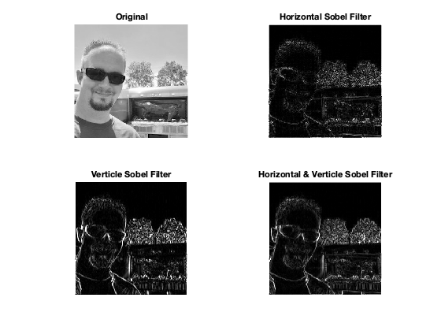

clear all;
close all;
pic = rgb2gray(imread('./standard_test_images/Me.jpg'));
pic = double(pic);
horizontal = [0 1 0; 1 -4 1; 0 1 0];
virtical = [-1 0 1; -1 0 1; -1 0 1];
pic2 = imfilter(pic, horizontal,'corr');
pic3 = filter2(virtical, pic);
pic4 = sqrt((pic2.^2+pic3.^2)/2);
figure,subplot(2,2,1),image(pic);
colormap(gray(256));
axis image;
axis off;
title('Original');
subplot(2,2,2),image(abs(pic2));
colormap(gray(256));
axis image;
axis off;
title('Horizontal Sobel Filter');
subplot(2,2,3),image(abs(pic3));
colormap(gray(256));
axis image;
axis off;
title('Verticle Sobel Filter');
subplot(2,2,4),image(pic4);
colormap(gray(256));
axis image;
axis off;
title('Horizontal & Verticle Sobel Filter');
